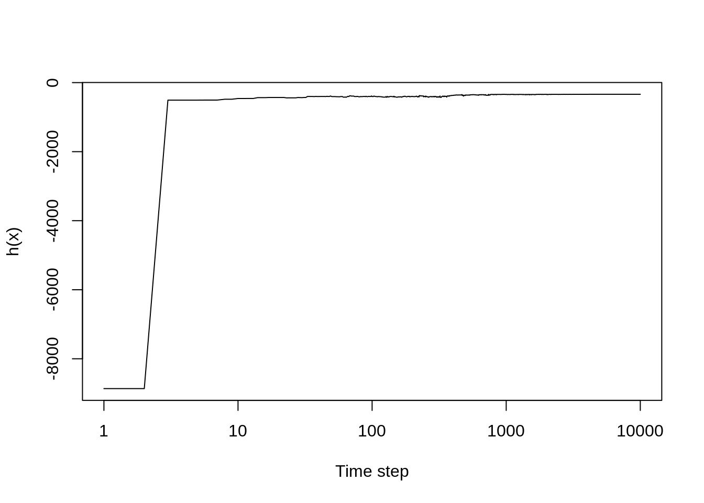
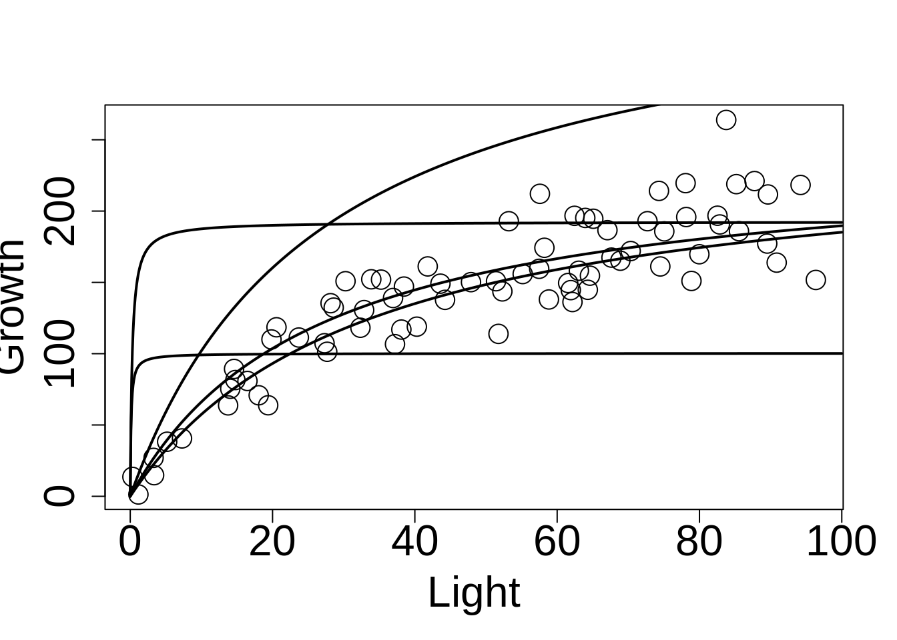
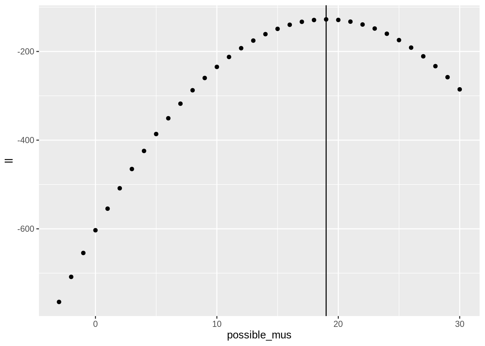
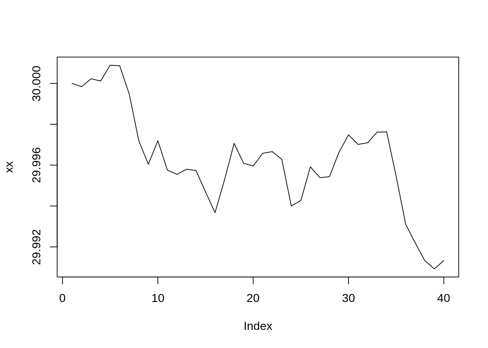
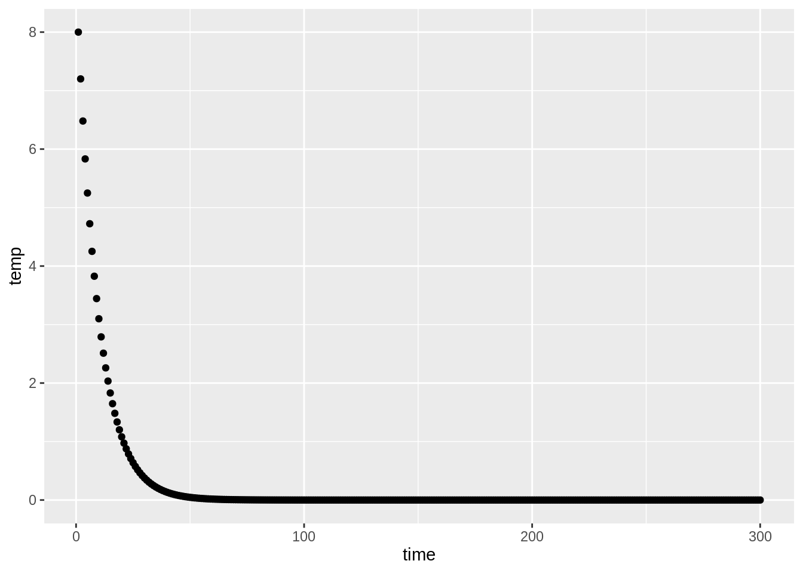
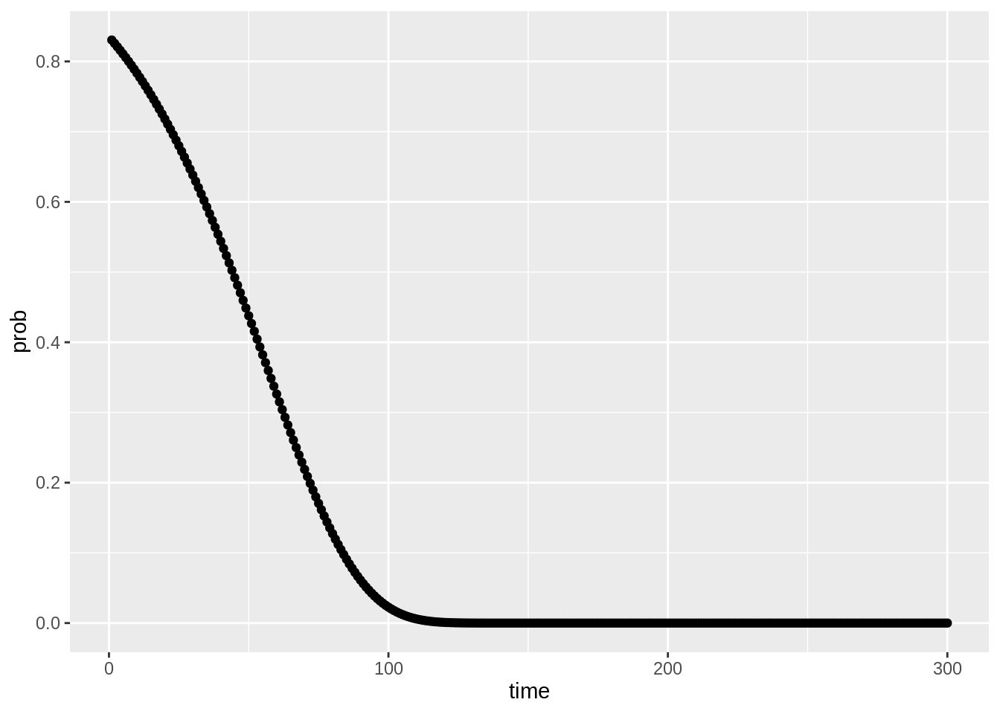
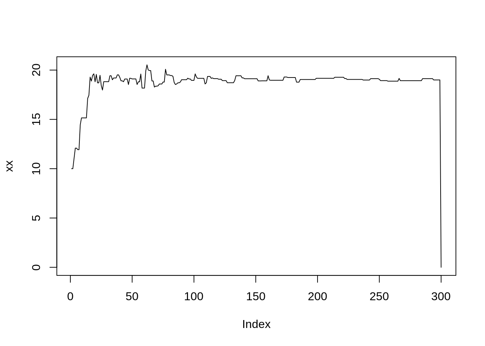

# Load the data
data <- read.table("data/hemlock.txt", header = TRUE)
obs = data[,2]
L = data[,1]
# Likelihood function
h <- function(obs, L, pars) {
a <- pars[1]
s <- pars[2]
sigma <- pars[3]
mu <- a*L/(a/s + L)
sum(log(dnorm(obs, mu, sigma)))
}
# Candidate function
c_x <- function(pars_lo, pars_hi) runif(1, pars_lo, pars_hi)
# Set conditions for the simulated annealing sequence
T_fn <- function(T0, alpha, step) T0*exp(alpha*step)
T0 <- 10
alpha = -0.001
nsteps <- 10000
# Prepare an object to store the result
res <- matrix(nr = nsteps, nc = 5)
# Initiate the algorithm
a0 <- 1
s0 <- 1000
sd0 <- 10
pars0 <- c(1, 100, 10)
pars_lo <- c(0, 1, 1)
pars_hi <- c(1000, 1000, 100)
# Main loop
for(step in 1:nsteps) {
for(j in 1:3) {
# Draw new value for parameter j
pars1 <- pars0
pars1[j] <- c_x(pars_lo[j], pars_hi[j])
# Evaluate the function
h1 <- h(obs, L, pars1)
h0 <- h(obs, L, pars0)
# Compute the difference
diff <- h1 - h0
# Accept if improvement
if(diff > 0) pars0 <- pars1
# Accept wrong candidates
else {
p <- exp(diff/T_fn(T0, alpha, step))
if(runif(1)<p) pars0 <- pars1
}
}
# Record values
res[step,] <- c(step,pars0,h(obs,L,pars0))
}
#Plot the results
plot(c(1:nsteps), res[,5], type = "l", xlab = "Time step", ylab = "h(x)",cex = 2, log = "x")
plot(L, obs, cex = 2, xlab="Light", ylab = "Growth", cex.axis = 2, cex.lab = 2)
add_model<- function(step) {
Lseq = seq(0,100,0.1)
a=res[step,2]
s=res[step,3]
lines(Lseq,a*Lseq/(a/s+Lseq), lwd = 2)
}
add_model(2)
add_model(10)
add_model(100)
add_model(500)
add_model(1000)
Rather than using the hemlock data, this example uses 42 random numbers, and tries to identify the known mean of 19.
DEFINE function to optimize h(X)
set.seed(1316)
fake_xs <- rnorm(42, 19, 4)
loglike_numbers <- function(numbers, mu) sum(dnorm(x = numbers, mean = mu, sd = 4, log = TRUE))
loglike_numbers(fake_xs, 7)## [1] -329.7753library(tidyverse)
tibble(possible_mus = -3:30) %>%
mutate(ll = map_dbl(possible_mus, loglike_numbers, numbers = fake_xs)) %>%
ggplot(aes(x = possible_mus, y = ll)) + geom_point() +
geom_vline(xintercept = 19)
DEFINE the sampling function c(X)
see_of_x <- function(x, sigma = 1) { x + rnorm(1, sd = sigma) }
xx <- numeric(40)
xx[1] <- 30
## walk like a drunk: test my see of x function
for(i in 2:40){
xx[i] <- see_of_x(xx[i-1], sigma = .001)
}
plot(xx, type = "l")
DEFINE temperature sequence
temp_line <- function(runs, tstart, tcool){
exp(log(tstart) + log(tcool)*0:(runs-1))
}
temp_line_str <- function(runs, tstart) {
seq(tstart, 0, length.out = runs)
}
tibble(time = 1:300,
temp = temp_line(300, 8, 0.9)) %>%
ggplot(aes(x = time, y = temp)) +
geom_point()
tibble(time = 1:300,
prob = exp(-13/temp_line(300, 70, 0.97))) %>%
ggplot(aes(x = time, y = prob)) +
geom_point()
REPEAT
DRAW sample X from c(x)
COMPUTE difference diff = h(X) - h(X_0)
IF diff > 0 ACCEPT X
ELSE
COMPUTE acceptance probability p = exp(diff/T)
DRAW value P from random uniform on (0,1)
IF P < p
ACCEPT X
ELSE
REJECT X
UPDATE temperature
UNTIL nsteps is reached# function to take temperature, diff, and give back TRUE or FALSE (will a negative be kept)
keep_neg_diff <- function(diff, Tmp){
stopifnot(diff<0)
runif(1, min = 0, max = 1) < exp(diff/Tmp)
}
keep_neg_diff(-30, Tmp = 40)## [1] FALSEkeep_neg_diff(10, Tmp = 0)## Error in keep_neg_diff(10, Tmp = 0): diff < 0 is not TRUE## function to take x0 and x1 and a function and temp and return either x0 (reject) or x1 ( accept)
keep_or_reject <- function(x0, x1, fun, temp){
diff <- fun(x1) - fun(x0)
# browser()
if (diff > 0) {
return(x1)
} else if (keep_neg_diff(diff, Tmp = temp)){
return(x1)
} else {
return(x0)
}
}# evaluate for these only
ll_fakenums_f_x <- function(x) loglike_numbers(fake_xs, mu = x)
# make temperatures
runs <- 299
temps <- temp_line(runs, 3, 0.98)
xx <- numeric(runs + 1)
startval <- 10
xx[1] <- startval
for (i in 2:runs){
maybe <- see_of_x(xx[i-1])
xx[i] <- keep_or_reject(x0 = xx[i-1], x1 = maybe, fun = ll_fakenums_f_x, temp = temps[i-1])
}
plot(xx, type = "l")